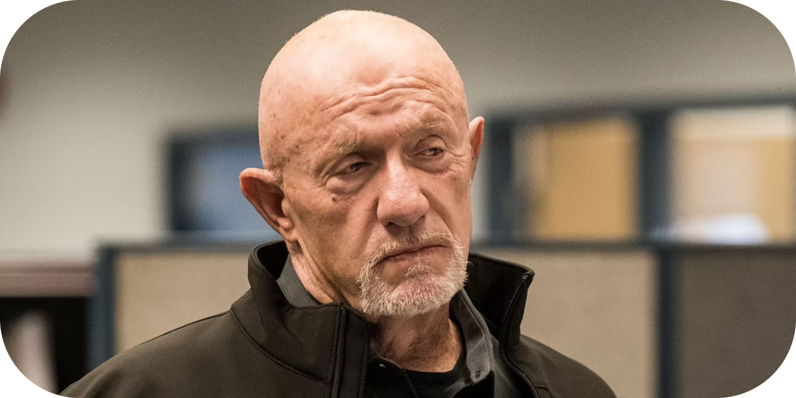

Mike Ehrmantraut
Mike Ehrmantraut, interpretado por Jonathan Banks, é um personagem central em Breaking Bad e Better Call Saul, conhecido por sua inteligência, habilidade e estoicismo. Ele é um ex-policial de Filadélfia que se torna um "faz-tudo" no mundo do crime em Albuquerque, trabalhando como fixador, investigador e executor para figuras poderosas, como Gustavo Fring e Saul Goodman.
Mike é um homem de poucas palavras, mas de profunda competência. Ele tem um código moral próprio, valorizando a lealdade, a eficiência e a proteção daqueles que ama. Uma das principais motivações de Mike é garantir o bem-estar de sua neta, Kaylee, e de sua nora, Stacey, como uma forma de redenção por seus erros passados. Essa responsabilidade é o que o leva a entrar no mundo do crime, já que deseja sustentar a família financeiramente.
No universo de Breaking Bad, Mike é apresentado como o braço direito de Gus Fring, ajudando a gerenciar o império de drogas com precisão e lidando com problemas de forma implacável. Ele também atua como intermediário entre Saul Goodman e seus clientes criminosos, frequentemente solucionando situações complicadas com seu pragmatismo e habilidades táticas. Apesar de seu envolvimento no crime, Mike demonstra um senso de ética superior ao de muitos ao seu redor, recusando-se a se envolver em atos de crueldade desnecessária ou irracionalidade.
Em Better Call Saul, a história de Mike é mais detalhada, revelando como ele passou de um policial honrado a um homem consumido pela culpa e pela necessidade de sustentar sua família. É mostrado como ele se envolveu com Gustavo Fring e como sua expertise em segurança e estratégia o tornou indispensável. A série também explora os eventos traumáticos que moldaram sua personalidade, incluindo a morte de seu filho, Matt, outro policial, em circunstâncias que deixam marcas profundas em Mike.
Mike é um personagem multifacetado, equilibrando um exterior duro com uma humanidade subjacente. Sua experiência de vida e moralidade complexa o tornam um dos personagens mais fascinantes e trágicos do universo criado por Vince Gilligan. Jonathan Banks foi amplamente elogiado por sua atuação, trazendo uma profundidade e gravidade únicas ao papel.